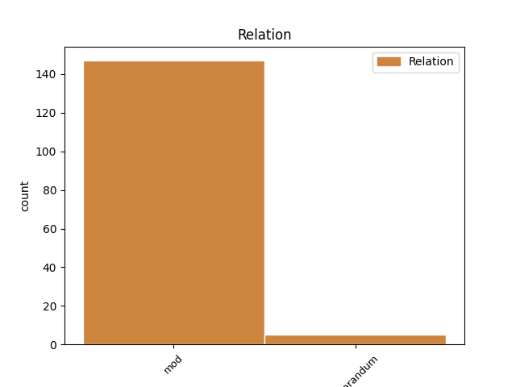
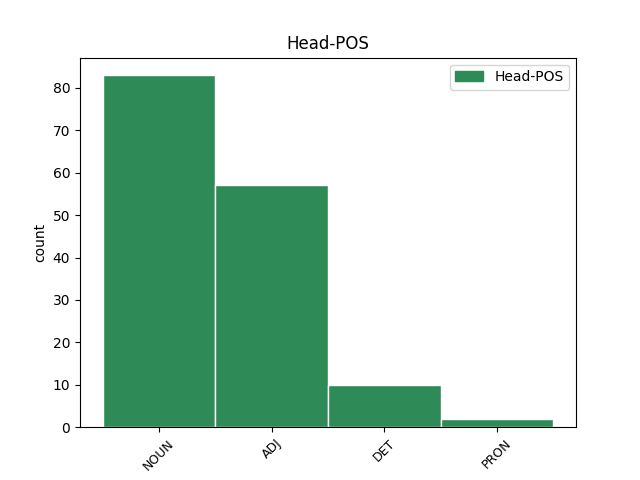
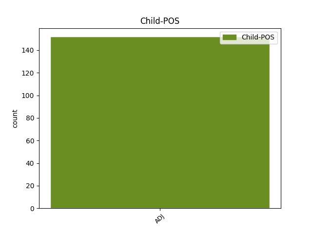

Distribution of features within this leaf



Agreement Rules sorted by frequency.
- When the dependent token is the modifer(mod) of the head token, and the head token is NOUN and the dependent token is ADJ.
1 så _ _ _ _ 0 _ _ _
2 det _ _ _ _ 0 _ _ _
3 e _ _ _ _ 0 _ _ _
4 det _ _ _ _ 0 _ _ _
5 skulle _ _ _ _ 0 _ _ _
6 så _ _ _ _ 0 _ _ _
7 lite _ _ _ _ 0 _ _ _
8 til _ _ _ _ 0 _ _ _
9 før _ _ _ _ 0 _ _ _
10 han _ _ _ _ 0 _ _ _
11 var _ _ _ _ 0 _ _ _
12 før _ _ _ _ 0 _ _ _
13 han _ _ _ _ 0 _ _ _
14 vart _ _ _ _ 0 _ _ _
15 redd _ _ _ _ 0 _ _ _
16 da _ _ _ _ 0 _ _ _
17 ser _ _ _ _ 0 _ _ _
18 du _ _ _ _ 0 _ _ _
19 til _ _ _ _ 0 _ _ _
20 begynne _ _ _ _ 0 _ _ _
21 med _ _ _ _ 0 _ _ _
22 # _ _ _ _ 0 _ _ _
23 men _ _ _ _ 0 _ _ _
24 det _ _ _ _ 0 _ _ _
25 det _ _ _ _ 0 _ _ _
26 det _ _ _ _ 0 _ _ _
27 gjekk _ _ _ _ 0 _ _ _
28 bort _ _ _ _ 0 _ _ _
29 det _ _ _ _ 0 _ _ _
30 når _ _ _ _ 0 _ _ _
31 eg _ _ _ _ 0 _ _ _
32 e _ _ _ _ 0 _ _ _
33 # _ _ _ _ 0 _ _ _
34 når _ _ _ _ 0 _ _ _
35 eg _ _ _ _ 0 _ _ _
36 hadde _ _ _ _ 0 _ _ _
37 hatt _ _ _ _ 0 _ _ _
38 han _ _ _ _ 0 _ _ _
39 ei _ _ _ _ 0 _ _ _
40 lita liten ADJ _ Definite=Ind|Degree=Pos|Gender=Fem|Number=Sing 41 mod _ _
41 tid tid NOUN _ Definite=Ind|Gender=Fem|Number=Sing 0 _ _ _
42 # _ _ _ _ 0 _ _ _
43 ja _ _ _ _ 0 _ _ _
44 . _ _ _ _ 0 _ _ _
1 og _ _ _ _ 0 _ _ _
2 dei _ _ _ _ 0 _ _ _
3 sat _ _ _ _ 0 _ _ _
4 to _ _ _ _ 0 _ _ _
5 mann _ _ _ _ 0 _ _ _
6 her _ _ _ _ 0 _ _ _
7 for _ _ _ _ 0 _ _ _
8 det _ _ _ _ 0 _ _ _
9 var _ _ _ _ 0 _ _ _
10 så _ _ _ _ 0 _ _ _
11 mykje mykje ADJ _ Definite=Ind|Degree=Pos|Gender=Neut|Number=Sing 12 mod _ _
12 tungt tung ADJ _ Definite=Ind|Degree=Pos|Gender=Neut|Number=Sing 0 _ _ _
13 å _ _ _ _ 0 _ _ _
14 ta _ _ _ _ 0 _ _ _
15 ned _ _ _ _ 0 _ _ _
16 at _ _ _ _ 0 _ _ _
17 når _ _ _ _ 0 _ _ _
18 # _ _ _ _ 0 _ _ _
19 når _ _ _ _ 0 _ _ _
20 dei _ _ _ _ 0 _ _ _
21 drog _ _ _ _ 0 _ _ _
22 ned _ _ _ _ 0 _ _ _
23 dei _ _ _ _ 0 _ _ _
24 der _ _ _ _ 0 _ _ _
25 klørne _ _ _ _ 0 _ _ _
26 her _ _ _ _ 0 _ _ _
27 . _ _ _ _ 0 _ _ _
1 litt litt ADJ _ Definite=Ind|Degree=Pos|Gender=Neut|Number=Sing 2 mod _ _
2 anna annan DET _ Definite=Ind|Degree=Pos|Gender=Neut|Number=Sing|PronType=Dem 0 _ _ _
3 sånn _ _ _ _ 0 _ _ _
4 ## _ _ _ _ 0 _ _ _
5 . _ _ _ _ 0 _ _ _
1 ja _ _ _ _ 0 _ _ _
2 da _ _ _ _ 0 _ _ _
3 e _ _ _ _ 0 _ _ _
4 # _ _ _ _ 0 _ _ _
5 da _ _ _ _ 0 _ _ _
6 er _ _ _ _ 0 _ _ _
7 det _ _ _ _ 0 _ _ _
8 nesten _ _ _ _ 0 _ _ _
9 slik _ _ _ _ 0 _ _ _
10 ein _ _ _ _ 0 _ _ _
11 må _ _ _ _ 0 _ _ _
12 innrømme _ _ _ _ 0 _ _ _
13 det _ _ _ _ 0 _ _ _
14 at _ _ _ _ 0 _ _ _
15 det _ _ _ _ 0 _ _ _
16 er _ _ _ _ 0 _ _ _
17 det _ _ _ _ 0 _ _ _
18 svært svær ADJ _ Definite=Ind|Degree=Pos|Gender=Neut|Number=Sing 21 reparandum _ _
19 e _ _ _ _ 0 _ _ _
20 # _ _ _ _ 0 _ _ _
21 svært svær ADJ _ Definite=Ind|Degree=Pos|Gender=Neut|Number=Sing 0 _ _ _
22 lite _ _ _ _ 0 _ _ _
23 av _ _ _ _ 0 _ _ _
24 ja _ _ _ _ 0 _ _ _
25 . _ _ _ _ 0 _ _ _
1 men _ _ _ _ 0 _ _ _
2 e _ _ _ _ 0 _ _ _
3 akkurat _ _ _ _ 0 _ _ _
4 noko _ _ _ _ 0 _ _ _
5 sikkert sikker ADJ _ Definite=Ind|Degree=Pos|Gender=Neut|Number=Sing 12 mod _ _
6 om _ _ _ _ 0 _ _ _
7 dette _ _ _ _ 0 _ _ _
8 herre _ _ _ _ 0 _ _ _
9 her _ _ _ _ 0 _ _ _
10 det _ _ _ _ 0 _ _ _
11 e _ _ _ _ 0 _ _ _
12 det det PRON _ Gender=Neut|Number=Sing|Person=3|PronType=Prs 0 _ _ _
13 har _ _ _ _ 0 _ _ _
14 eg _ _ _ _ 0 _ _ _
15 ikkje _ _ _ _ 0 _ _ _
16 kunna _ _ _ _ 0 _ _ _
17 det _ _ _ _ 0 _ _ _
18 er _ _ _ _ 0 _ _ _
19 ikkje _ _ _ _ 0 _ _ _
20 konstatert _ _ _ _ 0 _ _ _
21 e _ _ _ _ 0 _ _ _
22 sikkert _ _ _ _ 0 _ _ _
23 men _ _ _ _ 0 _ _ _
24 der _ _ _ _ 0 _ _ _
25 er _ _ _ _ 0 _ _ _
26 mange _ _ _ _ 0 _ _ _
27 ting _ _ _ _ 0 _ _ _
28 som _ _ _ _ 0 _ _ _
29 tyder _ _ _ _ 0 _ _ _
30 på _ _ _ _ 0 _ _ _
31 at _ _ _ _ 0 _ _ _
32 det _ _ _ _ 0 _ _ _
33 var _ _ _ _ 0 _ _ _
34 der _ _ _ _ 0 _ _ _
35 . _ _ _ _ 0 _ _ _
Disagree Examples:
1 og _ _ _ _ 0 _ _ _
2 da _ _ _ _ 0 _ _ _
3 køyrde _ _ _ _ 0 _ _ _
4 vi _ _ _ _ 0 _ _ _
5 e _ _ _ _ 0 _ _ _
6 # _ _ _ _ 0 _ _ _
7 og _ _ _ _ 0 _ _ _
8 da _ _ _ _ 0 _ _ _
9 # _ _ _ _ 0 _ _ _
10 viss _ _ _ _ 0 _ _ _
11 om _ _ _ _ 0 _ _ _
12 dei _ _ _ _ 0 _ _ _
13 hadde _ _ _ _ 0 _ _ _
14 nokon _ _ _ _ 0 _ _ _
15 riktig riktig ADJ _ Definite=Ind|Degree=Pos|Gender=Neut|Number=Sing 17 mod _ _
16 store _ _ _ _ 0 _ _ _
17 oksar okse NOUN _ Definite=Ind|Gender=Masc|Number=Plur 0 _ _ _
18 . _ _ _ _ 0 _ _ _
1 og _ _ _ _ 0 _ _ _
2 så _ _ _ _ 0 _ _ _
3 nå _ _ _ _ 0 _ _ _
4 er _ _ _ _ 0 _ _ _
5 det _ _ _ _ 0 _ _ _
6 jo _ _ _ _ 0 _ _ _
7 ein _ _ _ _ 0 _ _ _
8 heilt heil ADJ _ Definite=Ind|Degree=Pos|Gender=Neut|Number=Sing 9 mod _ _
9 annan annan DET _ Definite=Ind|Degree=Pos|Gender=Masc|Number=Sing|PronType=Dem 0 _ _ _
10 diesel _ _ _ _ 0 _ _ _
11 . _ _ _ _ 0 _ _ _
1 men _ _ _ _ 0 _ _ _
2 det _ _ _ _ 0 _ _ _
3 hadde _ _ _ _ 0 _ _ _
4 eg _ _ _ _ 0 _ _ _
5 veldig veldig ADJ _ Definite=Ind|Degree=Pos|Gender=Neut|Number=Sing 6 mod _ _
6 moro moro NOUN _ Definite=Ind|Gender=Fem|Number=Sing 0 _ _ _
7 av _ _ _ _ 0 _ _ _
8 for _ _ _ _ 0 _ _ _
9 det _ _ _ _ 0 _ _ _
10 at _ _ _ _ 0 _ _ _
11 . _ _ _ _ 0 _ _ _
1 så _ _ _ _ 0 _ _ _
2 da _ _ _ _ 0 _ _ _
3 hadde _ _ _ _ 0 _ _ _
4 vi _ _ _ _ 0 _ _ _
5 farleg farleg ADJ _ Definite=Ind|Degree=Pos|Gender=Neut|Number=Sing 6 mod _ _
6 leven lev NOUN _ Definite=Def|Gender=Masc|Number=Sing 0 _ _ _
7 altså _ _ _ _ 0 _ _ _
8 # _ _ _ _ 0 _ _ _
9 det _ _ _ _ 0 _ _ _
10 var _ _ _ _ 0 _ _ _
11 verkeleg _ _ _ _ 0 _ _ _
12 jenter _ _ _ _ 0 _ _ _
13 som _ _ _ _ 0 _ _ _
14 . _ _ _ _ 0 _ _ _
1 så _ _ _ _ 0 _ _ _
2 da _ _ _ _ 0 _ _ _
3 hadde _ _ _ _ 0 _ _ _
4 vi _ _ _ _ 0 _ _ _
5 farleg _ _ _ _ 0 _ _ _
6 leven _ _ _ _ 0 _ _ _
7 altså _ _ _ _ 0 _ _ _
8 # _ _ _ _ 0 _ _ _
9 det _ _ _ _ 0 _ _ _
10 var _ _ _ _ 0 _ _ _
11 verkeleg verkeleg ADJ _ Definite=Ind|Degree=Pos|Gender=Neut|Number=Sing 12 mod _ _
12 jenter jente NOUN _ Definite=Ind|Gender=Fem|Number=Plur 0 _ _ _
13 som _ _ _ _ 0 _ _ _
14 . _ _ _ _ 0 _ _ _